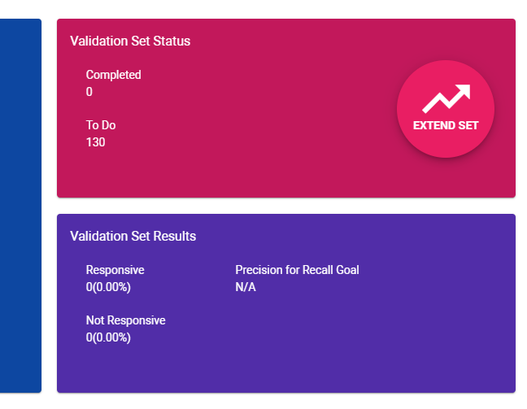

For Assisted Review projects, you have the choice to add a Validation Set (Test Set). This Validation Set can then be used for each issue created in a project, in order to determine how well the learning algorithm (also known as the Classifier) performs in labeling documents as responsive or not responsive.
To include a Validation Set, select the Use Validation Set option when adding a project to Assisted Review.
|
|
Note: You cannot add a Validation Set to an existing project. |
All documents in this Validation Set will be reviewed by a human, preferably a Subject Matter Expert. The results of each new training batch will be compared with the results of the Validation Set. Only when you have added a Validation Set to your project, the Recall Goal can be set and the Estimated Current Recall can be calculated.
For more information on recall—see
You have the option to Extend the Validation Set when the size of the set is not sufficient. This is the case when you do not have enough random documents to make a good estimation of the number of responsive documents in the project.
|
|
Note: If this is the case, you will see a warning icon next to the Estimated Current Recall:
|
To extend the Validation Set, select the Extend Set button.

The size of the Validation Set will be extended an additional 10% of the current Validation Set (with a minimum of 50 documents). So for a Validation Set of a 1000 documents, the extension is 100 documents. Click Extend Set again to add another 10%.
|
|
Note: You can always extend the Validation Set. However, remember there is only one Validation Set per project. If you extend the Validation Set for an issue, it will be extended for all issues. Also, it is recommended to review the Validation Set completely before extending it. |